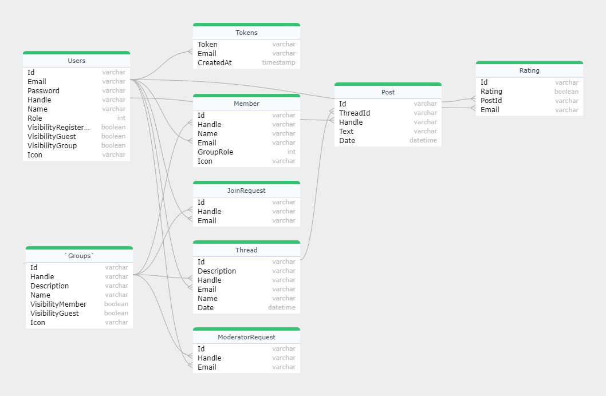

Sociální síť
- Autoři
-
Martin Kubička
xkubic45@stud.fit.vutbr.cz
Dizajn a implementácia stránok skupín
Dizajn a implementácia stránok prihlasovania a registrácie
Dizajn a implementácia navigácie
-
Matěj Macek
xmacek27@stud.fit.vutbr.cz
Dizajn a implementácia úvodnej stránky
Dizajn a implementácia stránky profilu
-
Dominik Petřík
xpetri25@stud.fit.vutbr.cz
Dizajn a implementácia stránky vlákna
Dizajn a implementácia stránky vyhladávania
- URL aplikace
Frontend:
-
https://prod--musical-haupia-37aecd.netlify.app
Backend (Swagger):
-
https://antioznuk-api.azurewebsites.net/index.html
Uživatelé systému pro testování
| Login |
Heslo |
Role |
| admin@admin.com |
Password1@ |
Server administrátor |
| adminTravelLovers@admin.com |
Password1@ |
Administrátor v skupine Travel Lovers |
| moderatorTravelLovers@moderator.com |
Password1@ |
Moderátor v skupine Travel Lovers |
| linda.jones@example.com |
Password1@ |
Bežný registrovaný uživateľ |
Video
https://youtu.be/BKnTwmc1M3Q
Implementace
Pre serverovú časť sme použili framework .NET spoločne s MVC, MVC je
architektonický vzor, ktorý je v .NET frameworku implementovaný v rámci
ASP.NET MVC (Model-View-Controller). Tento vzor oddeľuje aplikáciu do troch
základných častí: Model (dátová reprezentácia a logika), View (užívateľské
rozhranie) a Controller (riadiaca logika).
Štruktúra projektu
- Enums: Obsahuje enumerácie pre roly užívateľov a roly v skupinách.
- Group: Obsahuje kontrolérov a modely súvisiace so skupinami.
- Hubs: Obsahuje SignalR hub pre real-time komunikáciu.
- Login: Kontroléry a modely pre autentizáciu a správu hesiel.
- Member: Kontroléry a modely pre správu členstva v skupinách.
- Post: Kontroléry a modely pre správu príspevkov.
- Rating: Kontroléry a modely na hodnotenie príspevkov.
- Thread: Kontroléry a modely pre správu diskusných vlákien.
- User: Kontrolery a modely pre správu užívateľských profilov.
- Services: Obsahuje služby pre komunikáciu s databázou a ďalšiu logiku.
- Utils: Obsahuje užitočné triedy a atribúty.
Kontroléry a prípady použitia
V jednotlivých kontrolách sú definované samotné endpointy a ich
spracovanie.
Nasledujúca tabuľka uvádza, ktoré kontroléry implementujú jednotlivé
prípady použitia:
| Prípad Použitie |
Kontrolér |
| Prihlásenie používateľa |
LoginController.sk |
| Správa skupín |
GroupController.cs |
| Správa členov skupín |
MemberController.cs |
| Správa vlákien |
ThreadController.sk |
| Pridávanie, získavanie a správa príspevkov |
PostController.sk |
| Pridávanie, získavanie a správa hodnotenia |
RatingController.sk |
| Správa užívateľov |
UserController.cs |
Ukážka jednoduchého kontroléra
[HttpGet("getPost/{postId}")]
public async Task GetPost(Guid postId)
{
var post = await MySqlService.GetPost(postId);
if (post != null)
{
return Ok(post);
}
else
{
return NotFound($"Post with ID {postId} not found.");
}
}
MySQL Databáze
Pre ukladanie a získavanie dát je v projekte používaná MySQL databáza. Nižšie
sú uvedené kľúčové služby spojené s databázou:
-
IMySQLService: Rozhranie pre komunikáciu s MySQL
databáz.
-
MySQLService: Implementácia služby pre prácu s databázou.
Databáze

Instalace
Najskôr je potrebné si rozbehať a spustiť backend a následne frontend.
Databáza
Databáza beží na serveri a preto nie je potrebné ju nijako inicliazovať, ale
pre prípad reštartovania existuje skript v archíve BE DbSetup.sh, ktorý
vymaže a inicializuje databázu.
- cd BE
- chmod +x DbSetup.sh
- ./DbSetup.sh
Backend
- Požadovaná nainštalovaná verzia je .NET7
- cd BE/IIS_SERVER/IIS_SERVER
- Ďalej doporučujem nemeniť veci a iba skopírovať do terminálu.
-
dotnet user-secrets set "DB_ConnectionString"
"Server=antioznuk-martinkubicka22-d781.aivencloud.com;Port=15939;Database=defaultdb;Uid=avnadmin;Pwd=AVNS_4iCQ_2BI9PsIL6BZ2nu;"
- dotnet user-secrets set "jwt_issuer" "secretkeyissuer"
- dotnet user-secrets set "jwt_audience" "http://localhost:5203/"
-
dotnet user-secrets set "jwt_secret"
"iis-itu-super-secret-extra-long-key"
-
Pri následujúcom kroku je potrebné mať nastavený gmail účet (pre lokálne
testovanie doporučujem sa s tým netrápiť a zadať hocičo (v nasadenej
verzii to funguje) - nepôjde forgot password)
- dotnet user-secrets set "mail" "your gmail"
- dotnet user-secrets set "mail_password" "your password"
- dotnet user-secrets set "salt" "iis-itu-salt"
- dotnet run
Frontend
- Požadovaná nainštalovaná verzia je Nodejs > 16
- cd FE (z hlavného adresára)
- npm install
- npm run dev
Známé problémy
Všetky požiadavky zadania boli naimplementované.